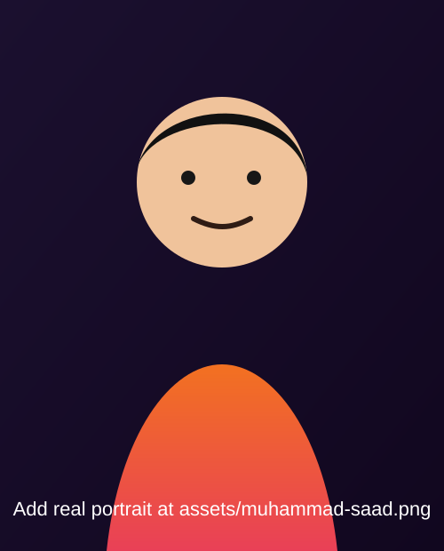

01 · Understand the Problem
I begin by clarifying goals, constraints, and the exact business outcome the client needs.
n8n Automation | AI Agents | n8n Expert
I’m Muhammad Saad, an n8n Automation Developer focused on practical, real-world workflows — from AI assistants and chatbots to data sync and webhook systems.

Portrait placeholder path: assets/muhammad-saad.svg
I begin by clarifying goals, constraints, and the exact business outcome the client needs.
I map every step of the automation flow before building it in n8n.
I document the APIs, services, databases, and tools required for a scalable solution.
I test each node and scenario to ensure stable, efficient, and error-free real-world performance.
Google Sheets, APIs, Airtable, Supabase, and databases connected through reliable automation pipelines.
OpenAI, embeddings, Qdrant, and Pinecone integrations for intelligent document retrieval systems.
WhatsApp, Telegram, and website chatbots with natural language understanding and task execution.
ElevenLabs + Twilio solutions for call automation, lead capture, and outbound workflows.
Cleaning, normalization, batching, and structured output generation for reliable downstream use.
Real-time n8n event handling to connect external services, apps, and custom platforms.
Screenshots and case studies can be added here as you share them.
Captures incoming leads, scores intent, and routes high-value prospects instantly.
Automates customer responses, pulls context from knowledge bases, and escalates when needed.
Syncs transactional data between sheets, CRM, and databases with validation and fail-safes.
Hire me for n8n automation architecture, AI agent workflows, and production-grade integrations.
Visit Upwork Profile